수질환경기사 (2015-05-31 기출문제)
1과목: 수질오염개론
1. 진핵세포에 대한 설명으로 틀린 것은?
- 세포핵에 1개의 염색체를 가지고 있다.
- 유사분열을 한다.
- 몇 개의 DNA분자로 되어 있다.
- 세포벽은 두껍거나 없다.
(정답률: 66%)

2. 다음 중 수질모델링을 위한 절차에 해당하는 항목으로 거리가 먼 것은?
- 변수추정
- 수질예측 및 평가
- 보정
- 감응도 분석
(정답률: 55%)
3. 하천 모델 중 다음의 특징을 가지는 것은?
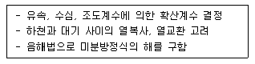
- QUAL-1
- WQRRS
- DO SAG-1
- HSPE
(정답률: 78%)
4. 건조고형물량이 3000kg/day인 생슬러지를 저율혐기성소화조로 처리한다. 휘발성고형물은 건조고형물의 70%이고 휘발성고형물의 60%는 소화에 의해 분해된다. 소화된 슬러지의 총고형물은 몇 kg/day인가?
- 1040 kg/day
- 1740 kg/day
- 2040 kg/day
- 2440 kg/day
(정답률: 68%)
5. 황산염에 관한 설명으로 틀린 것은?
- 황산이온은 자연수 속에 들어 있는 주요 음이온이다.
- 용존산소와 질산염이 존재하지 않는 환경에서 황산이온은 수소원(전자공여체)으로 사용된다.
- 황산이온이 과다하게 포함된 수돗물을 마시면 설사를 일으킨다.
- 황산이온이 혐기성 상태에서 환원되어 생성되는 황화수소로 인하여 악취문제가 발생한다.
(정답률: 72%)
6. 유출, 유입량이 5000m3/d, 저수량이 500000m3 인 호수에 A공장의 폐수가 일시적으로 방류되어 호수의 BOD 농도가 100mg/L로 되었다. 이 호수의 BOD농도가 1.0mg/L로 저하되려면 얼마의 기간이 필요한가? (단, 일시적으로 유입된 공장폐수 외의 BOD 유입은 없으며 호수는 완전혼합반응조, 1차 반응으로 가정한다.)
- 230일
- 330일
- 460일
- 560일
(정답률: 67%)
7. 해수의 성분에 관한 설명으로 틀린 것은?
- 해수의 염분은 무역풍대 해역 보다 적도 해역이 낮다.
- Cl-은 해수에 녹아 있는 성분 중 가장 많은 양을 차지한다.
- 해수 내 성분 중 나트륨 다음으로 가장 많은 성분을 차지하는 것은 칼륨이다.
- 해수 내 전체 질소 중 35% 정도는 암모니아성 질소, 유기질소 형태이다.
(정답률: 74%)
8. 수은(Hg)에 관한 설명으로 틀린 것은?
- 아연정련업, 도금공장, 도자기제조업에서 주로 발생한다.
- 대표적 만성질환으로는 미나마타병, 헌터-루셀 증후군이 있다.
- 유기수은은 금속상태의 수은보다 생물체내에 흡수력이 강하다.
- 상온에서 액체상태로 존재하며, 인체에 노출시 중추신경계에 피해를 준다.
(정답률: 78%)
9. 수원의 종류 중 지하수에 관한 설명으로 틀린 것은?
- 수온 변동이 적고 탁도가 낮다.
- 미생물이 없고 오염물이 적다.
- 유속이 빠르고, 광역적인 환경조건의 영향을 받아 정화되는데 오랜 기간이 소요된다.
- 무기염류 농도와 경도가 높다.
(정답률: 80%)
10. 어떤 하천수의 수온은 10℃이다. 20℃의 탈산소계수 K(상용대수)가 0.1/day일 때 최종BOD에 대한 BOD6의 비는? (단, KT=K20℃×1.047T-20, BOD6/최종BOD)
- 0.42
- 0.58
- 0.63
- 0.83
(정답률: 71%)
11. 어떤 시료의 생물학적 분해 가능 유기물질의 농도가 37mg/L이며, 경험적인 분자식이 C6H11ON2라고 할 때 이 물질의 이론적 최종 BOD는?
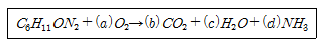
- 63 mg/L
- 83 mg/L
- 103 mg/L
- 123 mg/L
(정답률: 58%)
12. pH 7인 물에서 CO2의 해리상수는 4.3×10-7이고 [HCO3-]=4.3×10-2 mole/L 일 때 CO2의 농도는?
- 1 mg/L
- 10 mg/L
- 44 mg/L
- 440 mg/L
(정답률: 52%)
13. 완충용액에 대한 설명으로 틀린 것은?
- 완충용액의 작용은 화학평형원리로 쉽게 설명된다.
- 완충용액은 한도내에서 산을 가했을 때 pH에 약간의 변화만 준다.
- 완충용액은 보통 약산과 그 약산의 짝염기의 염을 함유한 용액이다.
- 완충용액은 보통 강염기와 그 염기의 강산의 염이 함유된 용액이다.
(정답률: 66%)
14. 아래와 같은 폐수의 생물학적으로 분해가 불가능한 불용성 COD는? (단, BODU/BOD5=1.5, COD=1583mg/L, SCOD=948mg/L, BOD5=659mg/L, SBOD5=484mg/L 이다.)
- 816.5 mg/L
- 574.5 mg/L
- 372.5 mg/L
- 235.5 mg/L
(정답률: 43%)
15. 완전혼합 흐름 상태에 관한 설명 중 옳은 것은?
- 분산이 1일 때 이상적 완전혼합 상태이다.
- 분산수가 0일 때 이상적 완전혼합 상태이다.
- Morrill 지수의 값이 1에 가까울수록 이상적 완전혼합 상태이다.
- 지체시간이 이론적 체류시간과 동일할 때 이상적 완전혼합 상태이다.
(정답률: 66%)
16. 반감기가 3일인 방사성 폐수의 농도가 10mg/L라면 감소 속도정수(day-1)는? (단, 1차 반응속도 기준, 자연대수 기준)
- 0.132
- 0.231
- 0.326
- 0.430
(정답률: 71%)
17. 하천수의 단위시간당 산소전달계수(KLa)를 측정코자 하천 수의 용존산소(DO) 농도를 측정하니 12 mg/L였다. 이 때 용존산소의 농도를 완전히 제거하기 위하여 투입하는 Na2SO3의 이론적 농도는? (단, 원자량은 Na:23, S:32, O:16)
- 약 63 mg/L
- 약 74 mg/L
- 약 84 mg/L
- 약 95 mg/L
(정답률: 49%)
18. 세균(Bacteria)의 경험적 분자식으로 옳은 것은?
- C5H8O2N
- C5H7O2N
- C7H8O5N
- C8H9O5N
(정답률: 85%)
19. 지표수와 비교한 지하수 특성으로 틀린 것은?
- 수온변동이 적고 자정속도가 느리다.
- 지표수에 비해 염류의 함량이 크다.
- 미생물이 없고, 오염물이 적다.
- 지층 및 지역별로 수질차이가 크다.
(정답률: 56%)
20. 미생물의 세포증식과 관련한 Monod 형태의 식을 나타낸 것으로 틀린 것은?
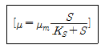
- μ는 비성장률로 단위는 시간-1 이다.
- μm는 최대 비성장률로 단위는 시간-1 이다.
- S는 기질의 감소률(상수)로 단위는 무차원이다.
- KS 는 반속도 상수로 최대성장률이 1/2일 때의 기질의 농도이다.
(정답률: 74%)
2과목: 상하수도계획
21. 상수처리시설 중 플록형성지의 플록형성표준시간은? (단, 계획정수량 기준)
- 5 ~ 10 분간
- 10 ~ 20 분간
- 20 ~ 40 분간
- 40 ~ 60 분간
(정답률: 75%)
22. 상수 수원인 복류수에 관한 내용으로 틀린 것은?
- 취수량이 증가하면 자연여과 효율이 높아져 취수량 변화에 따른 수질 변화는 적어진다.
- 원류인 하천이나 호소의 수질, 자연여과, 지층의 토질이나 그 두께 그리고 원류의 거리 등에 따라 수질이 변화한다.
- 복류수는 반드시 가장 가까운 하천이나 호소의 물이 지하에 침투되었다고 할 수 없다.
- 대체로 양호한 수질을 얻을 수 있어서 그대로 수원으로 사용되는 경우가 많다.
(정답률: 55%)
23. 막여과시설에서 막모듈의 열화에 대한 내용으로 틀린 것은?
- 미생물과 막 재질의 자화 또는 분비물의 작용에 의한 변화
- 산화제에 의하여 막 재질의 특성변화나 분해
- 건조되거나 수축으로 인한 막 구조의 비가역적인 변화
- 응집제 투입에 따른 막모듈의 공급유로가 고형물로 폐색
(정답률: 65%)
24. 직경 200cm 원형관로에 물이 1/2 차서 흐를 경우, 이 관로의 경심은?
- 15cm
- 25cm
- 50cm
- 100cm
(정답률: 71%)
25. 콘크리트조의 장방형 수로(폭 2m, 깊이 2.5m)가 있다. 이 수로의 유효수심이 2m인 경우의 평균유속은? (단, Manning 공식으로 계산, 동수경사:1/2000, 조도계수: 0.017이다.)
- 1.00 m/sec
- 1.42 m/sec
- 1.53 m/sec
- 1.73 m/sec
(정답률: 53%)
26. 접촉산화법의 특징 및 장단점에 관한 내용으로 틀린 것은?
- 부착생물량을 임의로 조정하기 어려워 조작조건의 변경에 대응하기가 용이하지 않다.
- 슬러지의 자산화가 기대되어 잉여슬러지량이 감소한다.
- 반응조내 매체를 균일하게 포기 교반하는 조건설정이 어렵고 사수부가 발생할 우려가 있다.
- 반송슬러지가 필요하지 않으므로 운전관리가 용이하다.
(정답률: 56%)
27. 호소, 댐을 수원으로 하는 취수문에 관한 설명으로 틀린 것은?
- 일반적으로 중, 소량 취수에 쓰인다.
- 일반적으로 가물막이(cofferdam)를 필요로 한다.
- 파랑, 결빙 등의 기상조건에 영향이 거의 없다.
- 갈수기에 호소에 유입되는 수량 이하로 취수할 계획이면 안정 취수가 가능하다.
(정답률: 72%)
28. 비교회전도가 700 ~ 1200인 경우에 사용되는 하수도용 펌프 형식으로 옳은 것은?
- 터어빈펌프
- 볼류트펌프
- 축류펌프
- 사류펌프
(정답률: 71%)
29. 정수처리시 랑겔리아지수(RI)의 개선을 위한 방법으로 옳은 것은? (단, 용해성 성분)
- 알칼리제 처리
- 철세균 이용법
- 전기분해
- 부상분리
(정답률: 61%)
30. 단면형태가 직사각형인 하수관거의 장·단점으로 옳은 것은?
- 시공장소의 흙두께 및 폭원에 제한을 받는 경우에 유리하다.
- 만류가 되기까지는 수리학적으로 불리하다.
- 철근이 해를 받았을 경우에도 상부하중에 대하여 대단히 안정적이다.
- 현장 타설의 경우, 공사기간이 단축된다.
(정답률: 50%)
31. 캐비테이션(공동현상)의 방지대책에 관한 설명으로 틀린 것은?
- 펌프의 설치위치를 가능한 한 낮추어 가용유효흡입 수두를 크게 한다.
- 흡입관의 손실을 가능한 한 작게 하여 가용유효흡입 수두를 크게 한다.
- 펌프의 회전속도를 낮게 선정하여 필요유효흡입수도를 크게 한다.
- 흡입측 밸브를 완전히 개방하고 펌프를 운전한다.
(정답률: 67%)
32. 하수 관거의 접합 방법 중 유수는 원활한 흐름이 되지만 굴착 깊이가 증가됨으로 공사비가 증대되고 펌프로 배수하는 지역에서는 양정이 높게 되는 단점이 있는 것은?
- 수면접합
- 관정접합
- 중심접합
- 관저접합
(정답률: 56%)
33. 다음 표는 우수량을 산출하기 위해 조사한 지역분포와 유출계수의 결과이다. 이 지역의 전체 평균 유출계수는?
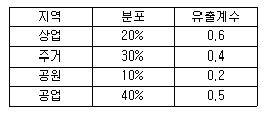
- 0.30
- 0.35
- 0.42
- 0.46
(정답률: 60%)
34. 하수슬러지 개량방법과 특징으로 틀린 것은?
- 고분자응집제 첨가: 슬러지 성상을 그대로 두고 탈수성, 농축성의 개선을 도모한다.
- 무기약품 첨가: 무기약품은 슬러지의 pH를 변화시켜 무기질 비율을 증가시키고 안정화를 도모한다.
- 열처리: 슬러지 성분의 일부를 용해시켜 탈수 개선을 도모한다.
- 세정: 혐기성 소화슬러지의 알칼리도를 증가 시켜 탈수 개선을 도모한다.
(정답률: 67%)
35. 정수시 처리대상물질(항목)과 처리방법이 잘못 짝지어진것은?
- 불용해성성분 - 조류 - 부상분리
- 불용해성성분 - 미생물(크립토스포리디움) - 활성탄
- 불용해성성분 - 탁도 - 완속여과방식
- 용해성성분 - 트리클로로에틸렌 - 폭기(스트리핑)
(정답률: 51%)
36. 상수처리시설인 침사지의 구조 기준으로 틀린 것은?
- 표면부하율은 200 ~ 500mm/min을 표준으로 한다.
- 지내 평균유속은 30cm/sec를 표준으로 한다.
- 지의 상단높이는 고수위보다 0.6~1m의 여유고를 둔다.
- 지의 유효수심은 3~4m를 표준으로 한다.
(정답률: 65%)
37. 계획우수량을 정할 때 고려하여야 할 사항 중 틀린 것은?
- 하수관거의 확률년수는 원칙적으로 10~30년으로 한다.
- 유입시간은 최소단위배수구의 지표면특성을 고려하여 구한다.
- 유출계수는 지형도를 기초로 답사를 통하여 충분히 조사하고 장래 개발계획을 고려하여 구한다.
- 유하시간은 최상류관거의 끝으로부터 하류관거의 어떤 지점까지의 거리를 계획유량에 대응한 유속으로 나누어 구하는 것을 원칙으로 한다.
(정답률: 60%)
38. 하수도 계획의 목표연도는 원칙적으로 몇 년 정도로 하는가?
- 10년
- 15년
- 20년
- 25년
(정답률: 78%)
39. 배수시설인 배수관의 수압에 대한 다음 설명 중 ( )안에 맞는 값은?
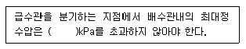
- 500
- 700
- 900
- 1100
(정답률: 74%)
40. 상수도시설 일반구조의 설계하중 및 외력에 대한 고려 사항으로 틀린 것은?
- 풍압은 풍량에 풍력계수를 곱하여 산정한다.
- 얼음 두께에 비하여 결빙면이 작은 구조물의 설계에는 빙압을 고려한다.
- 지하수위가 높은 곳에 설치하는 지상(地狀)구조물은 비웠을 경우의 부력을 고려한다.
- 양압력은 구조물의 전후에 수위차가 생기는 경우에 고려한다.
(정답률: 64%)
3과목: 수질오염방지기술
41. 설계부하가 37.6m3/m2·day 이고, 처리할 폐수 유량이 9568m3/day인 경우의 원형 침전조 직경은?
- 12m
- 14m
- 16m
- 18m
(정답률: 61%)
42. 연속회분식반응조(Sequencing Batch Reactor)에 관한 설명으로 틀린 것은?
- 하나의 반응조 안에서 호기성 및 혐기성 반응 모두를 이룰수 있다.
- 별도의 침전조가 필요없다.
- 기본적인 처리계통도는 5단계로 이루어지며 요구하는 유출수에 따라 운전 Mode를 채택할 수 있다.
- 기존 활성슬러지 처리에서의 시간개념을 공간개념으로 전환한 것이라 할 수 있다.
(정답률: 66%)
43. 활성슬러지 처리시설에서 1차 침전 후의 BOD5가 200mg/L인 폐수 2000m3/d를 처리하려고 한다. 포기조 유기물부하는 0.2kg BOD/kg MLVSS·d, 체류시간이 6hr일 때, MLVSS는?
- 1000 mg/L
- 2000 mg/L
- 3000 mg/L
- 4000 mg/L
(정답률: 52%)
44. 수온 20℃에서 평균직경 1mm인 모래입자의 침전속도는? (단, 동점성값은 1.003×10-6m2/s, 모래비중은 2.5, Stoke's법칙 이용)
- 0.414 m/s
- 0.614 m/s
- 0.814 m/s
- 1.014 m/s
(정답률: 55%)
45. 기계적으로 청소되는 바(bar)스크린의 바 두께는 5mm이고, 바 간의 거리는 20mm이다. 바를 통과하는 유속이 0.9m/s라고 한다면 스크린을 통과하는 수두손실은? (단, H= [(Vb2-Va2)/2g][1/0.7])
- 0.0157m
- 0.0212m
- 0.0317m
- 0.0438m
(정답률: 46%)
46. 생물학적 처리공정에서 질산화 반응은 다음의 총괄 반응식으로 나타낼 수 있다.
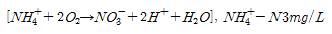
가 질산화 되는데 요구되는 산소(O2) 양(mg/L)은?- 11.2
- 13.7
- 15.3
- 18.4
(정답률: 56%)
47. 활성슬러지 폭기조의 유효용적이 1000m3, MLSS 농도는 3000mg/L이고 MLVSS는 MLSS농도의 75%이다. 유입 하수의 유량은 4000m3/day이고, 합성계수 Y는 0.63mg MLVSS/mg-BODremoved, 내생분해계수 k 는 0.⑤day-1, 1차침전조 유출수의 BOD는 200mg/L, 폭기조 유출수의 BOD는 20mg/L일 때, 슬러지 생성량은?
- 301 kg/day
- 321 kg/day
- 341 kg/day
- 361 kg/day
(정답률: 43%)
48. 유입 유량이 500000m3/d, BOD5가 200mg/L인 폐수를 처리하기 위해 완전혼합형 활성슬러지 처리장을 설계하려고 한다. 1차 침전지에서 제거된 유입수의 BOD5는 34%이고, MLVSS는 3000mg/L, 반응속도상수(K)는 1.0L/gMLVSS·hr이라면, 일차반응일 경우 F/M비는? (단, 유출수 BOD5 10mg/L )
- 0.24 kg BOD/kg MLVSS·d
- 0.28 kg BOD/kg MLVSS·d
- 0.32 kg BOD/kg MLVSS·d
- 0.36 kg BOD/kg MLVSS·d
(정답률: 29%)
49. 하수종말처리장에서 30분 침강율 20%, SVI 100, 반송슬러지 SS 농도가 9000mg/L일 때, 슬러지 반송율은?
- 약 30%
- 약 50%
- 약 70%
- 약 90%
(정답률: 34%)
50. 유입 폐수량 50 m3/hr, 유입수 BOD 농도 200g/m3, MLVSS 농도 2kg/m3, F/M 비 0.5kg BOD/kg MLVSS·day일 때, 폭기조 용적은?
- 240m3
- 380m3
- 430m3
- 520m3
(정답률: 56%)
51. 하수의 인 제거 처리공정 중 인 제거율(%)이 가장 높은 것은?
- 역삼투
- 여과
- RBC
- 탄소흡착
(정답률: 58%)
52. 무기수은계 화합물을 함유한 폐수의 처리방법이 아닌 것은?
- 황화물 침전법
- 활성탄 흡착법
- 산화분해법
- 이온교환법
(정답률: 52%)
53. 유해물질인 시안(CN)처리 방법에 관한 설명으로 틀린 것은?
- 오존산화법: 오존은 알칼리성 영역에서 시안화합물을 N2로 분해시켜 무해화 한다.
- 전해법: 유가(有價)금속류를 회수할 수 있는 장점이 있다.
- 충격법: 시안을 pH 3 이하의 강산성 영역에서 강하게 폭기하여 산화하는 방법이다.
- 감청법: 알칼리성 영역에서 과잉의 황산알루미늄을 가하여 공침시켜 제거하는 방법이다.
(정답률: 56%)
54. 정수처리 대상 항목의 처리방법으로 틀린 것은?
- 색도가 높은 경우에는 응집침전처리, 활성탄처리 또는 오존처리를 한다.
- 트리클로로에틸렌, 테트라클로로에틸렌, 1,1,1-트리클로로 에탄 등을 함유한 경우에는 이를 저감시키기 위하여 폭기처리나 입상활성탄처리를 한다.
- 음이온계면활성제를 다량으로 함유한 경우에는 음이온계면활성제를 제거하기 위하여 활성탄 처리나 생물처리를 한다.
- 침식성유리탄산을 다량 포함한 경우에는 응집침전처리 또는 생물처리를 한다.
(정답률: 32%)
55. 인구 6000명의 도시하수를 RBC로 처리한다. 평균유량은 380L/cap·day, 유입 BOD5 는 200mg/L, 초기 침전조에서 BOD5는 33% 제거되며, 총 유출 BOD5는 20mg/L, 단수는 4이다. 실험에서 K 는 50.6L/day · m2 이라면 대수적 방법으로 구한 설계 수력학적 부하는? (단, 성능식 :
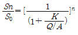
)- Q/A : 65.4L/day · m2
- Q/A : 77.7L/day · m2
- Q/A : 83.1L/day · m2
- Q/A : 96.9L/day · m2
(정답률: 38%)
56. 혐기성 소화시 소화가스 발생량 저하의 원인이 아닌 것은?
- 저농도 슬러지 유입
- 소화슬러지 과잉배출
- 소화가스 누적
- 조내 온도저하
(정답률: 57%)
57. 하수관거가 매설되어 있지 않은 지역에 위치한 500개의 단독주택(정화조 설치)에서 생성된 정화조 슬러지를 소규모 하수처리장에 운반하여 처리할 경우, 이로 인한 BOD 부하량 증가율(질량기준, 유입일 기준)은?
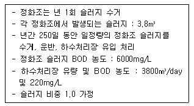
- 약 3.5%
- 약 5.5%
- 약 7.5%
- 약 9.5%
(정답률: 37%)
58. 역삼투법으로 하루에 760m3 의 3차 처리 유출수를 탈염하기 위하여 요구되는 막의 면적(m2)은?
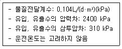
- 약 3200
- 약 3400
- 약 3500
- 약 3600
(정답률: 50%)
59. 하수로부터 인 제거를 위한 화학제의 선택에 영향을 미치는 인자가 아닌 것은?
- 유입수의 인 농도
- 슬러지 처리시설
- 알칼리도
- 다른 처리공정과의 차별성
(정답률: 65%)
60. 하수처리에 생물막법의 효과적 적용이 필요한 경우가 아닌 것은?
- 특수한 기능을 가진 미생물을 반응조내 고정화해야 할 필요가 있는 경우
- 증식속도가 빨라 고정화하지 않으면 미생물의 유출농도를 제어할 수 없는 경우
- 활성슬러지로는 대응할 수 없는 정도의 큰 부하변동이 있는 경우
- 생물반응의 저해물질이 유입되는 경우
(정답률: 45%)
4과목: 수질오염공정시험기준
61. 직각 3각 웨어에서 웨어의 수두 0.2m, 수로폭 0.5m, 수로의 밑면으로부터 절단 하부점까지의 높이 0.9m 일 때, 아래의 식을 이용하여 유량(m3/min)을 구하면?
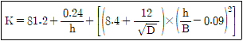
- 1.0
- 1.5
- 2.0
- 2.5
(정답률: 46%)
62. 퇴적물 채취기 중 포나 그랩(ponar grab)에 관한 설명으로 틀린 것은?
- 모래가 많은 지점에서도 채취가 잘되는 중력식 채취기 이다.
- 채취기를 바닥 퇴적물 위에 내린 후 메신저를 투하하면 장방형 상자의 밑판이 닫힌다.
- 부드러운 펄층이 두터운 경우에는 깊이 빠져 들어가기 때문에 사용하기 어렵다.
- 원래의 모델은 무게가 무겁고 커서 윈치 등이 필요하지만 소형의 포나 그랩은 윈치 없이 내리고 올릴 수 있다.
(정답률: 58%)
63. 전기전도도 측정에 관한 설명으로 틀린 것은?
- 정밀도는 측정값의 % 상대표준편차로 계산하며 측정값이 20% 이내 이어야 한다.
- 정밀도 및 정확도는 연1회 이상 산정하는 것을 원칙으로 한다.
- 온도계는 0.1℃까지 측정 가능한 온도계를 사용한다.
- 측정단위는 μV/cm 이다.
(정답률: 50%)
64. 자외선/가시선 분광법(이염화주석환원법)을 이용한 인산염인 측정에서 시료가 산성인 경우 사용하는 지시약은?
- 메틸오렌지
- 페놀프탈레인
- p-나이트로페놀용액
- 메틸 레드
(정답률: 41%)
65. 자외선/가시선 분광법을 적용한 음이온계면활성제 측정에 관한 설명으로 틀린 것은?
- 정량한계는 0.02mg/L 이다.
- 시료중의 계면활성제를 종류별로 구분하여 측정할 수 없다.
- 시료 속에 미생물이 있는 경우 일부의 음이온계면활성제가 신속히 변할 가능성이 있으므로 가능한 빠른 시간 안에 분석을 하여야 한다.
- 양이온 계면활성제가 존재할 경우 양의 오차가 주로 발생한다.
(정답률: 41%)
66. 시료의 보존방법에 관한 다음 설명으로 옳은 것은?
- 노말헥산추출물질 측정용 시료는 염산(1+4)를 넣으 pH 4이하로 하여 마개를 한다.
- 페놀류 측정용 시료는 인산을 가하여 pH 4로 조절하고 시로 1L당 황산동 0.5g을 가하고 5~10℃의 냉암소에 보관하며 채수 후 24시간 안에 분석하여야 한다.
- 비소 측정용 시료는 염산을 가하여 pH 2 이하로 조절한다.
- 6가 크롬 측정용 시료는 4℃에서 보관한다.
(정답률: 48%)
67. 실험 일반 총칙에 관한 내용과 가장 거리가 먼 것은?
- 공정시험기준 이외의 방법이라도 측정결과가 같거나 그 이상의 정확도가 있다고 국내·외에서 공인된 방법은 이를 사용할 수 있다.
- 하나 이상의 공정시험기준으로 시험한 결과가 서로 달라제반 기준의 적부에 영향을 줄 경우 항목별 공정시험기준의주 시험법에 의한 분석 성적에 의하여 판정한다.
- 연속측정 또는 현장측정의 목적으로 사용되는 측정 기기는 표준물질에 대한 보정을 행한 후 사용할 수 있다.
- 시험결과의 표시는 정량한계의 결과 표시 자리수를 따르며 정량한계 미만은 불검출된 것으로 간주한다.
(정답률: 43%)
68. 공장폐수 및 하수유량[관(pipe)내의 유량측정방법] 측정 방법 중 오리피스에 관한 설명으로 옳지 않은 것은?
- 설치에 비용이 적게 소요되며 비교적 유량측정이 정확하다.
- 오리피스판의 두께에 따라 흐름의 수로내외에 설치가 가능하다.
- 오리피스 단면에 커다란 수두손실이 일어나는 단점이 있다.
- 단면이 축소되는 목부분을 조절함으로써 유량이 조절된다.
(정답률: 43%)
69. 중금속 측정을 위한 시료 전처리 방법 중 용매추출법인 피로리딘 다이티오카르바민산 암모늄 추출법에 대한 설명으로 옳지 않은 것은?
- 시료 중의 구리, 아연, 납, 카드뮴, 니켈, 코발트 및 은 등의 측정에 이용되는 방법이다.
- 철의 농도가 높을 때에는 다른 금속 추출에 방해를 줄 수있다.
- 망간은 착화합물 상태에서 매우 안정적이기 때문에 추출되기 어렵다.
- 크롬은 6가 크롬 상태로 존재할 경우에만 추출된다.
(정답률: 54%)
70. 냄새의 분석방법 및 절차에 관한 내용으로 틀린 것은?
- 잔류염소가 존재하면 티오황산나트륨 용액을 첨가하여 잔류염소를 제거한다.
- 측정자가 시료에 대한 선입견을 갖지 않도록 어둡게 처리된 플라스크 또는 갈색플라스크를 사용한다.
- 냄새를 정확하게 측정하기 위하여 측정자는 3명 이상으로한다.
- 시료 측정시 탁도, 색도 등이 있으면 온도변화에 따라 냄새가 발생할 수 있으므로 온도변화를 1℃ 이내로 유지한다.
(정답률: 58%)
71. 다음은 총대장균군(막여과법) 분석에 관한 설명이다. ( )안에 옳은 내용은?
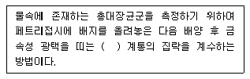
- 적색이나 진한 적색
- 갈색이나 진한 갈색
- 청색이나 진한 청색
- 황색이나 진한 황색
(정답률: 55%)
72. 불소를 자외선/가시선 분광법으로 분석할 경우, 간섭 물질로 작용하는 알루미늄 및 철의 방해를 제거할 수 있는 방법은? (단, 수질오염공정시험기준 기준)
- 산화
- 증류
- 침전
- 환원
(정답률: 52%)
73. 시료채취시 유의사항 중 옳은 것은?
- 지하수의 심층부의 경우 고속정량펌프를 사용하여야 한다.
- 냄새 측정을 위한 시료채취 시 유리기구류는 사용 직전에 새로 세척하여 사용한다.
- 퍼클로레이트를 측정하기 위한 경우는 시료병에 시료를 가득 채워야 한다.
- 1,4-다이옥신, 염화비닐, 아크릴로니트릴 등을 측정하기 위한 경우는 시료용기를 스테인레스강 재질의 채취기를 사용하여야 한다.
(정답률: 43%)
74. 투명도 측정에 관한 설명으로 틀린 것은?
- 측정시간은 오전 10시에서 오후 4시 사이에 측정한다.
- 측정결과는 0.1m 단위로 표기한다.
- 투명도판(백색원판)은 지름이 30cm로 무게가 약 3kg이 되는 원판에 지름 5cm의 구멍 8개가 뚫려 있다.
- 흐름이 있어 줄이 기울어질 경우에는 5kg 이상의 추를 달아 줄을 세워야 한다.
(정답률: 60%)
75. 석유계총탄화수소를 용매추출/기체크로마토그래피로 분석 할 때 정량한계(mg/L)는?
- 0.01
- 0.02
- 0.1
- 0.2
(정답률: 22%)
76. 다음은 하천수의 시료 채취 지점에 관한 내용이다. ( )안에 공통으로 들어갈 내용으로 가장 적합한 것은?
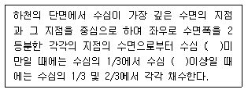
- 2m
- 3m
- 5m
- 6m
(정답률: 66%)
77. 물벼룩을 이용한 급성 독성 시험법에서 사용하는 용어의 정의로 옳지 않은 것은?
- 치사(death): 일정 비율로 준비된 시료에 물벼룩을 투입하고 12시간 경과 후 시험용기를 살며시 움직여주고, 30초 후 관찰했을 때 아무 반응이 없는 경우를 판정한다.
- 유영저해(immobilization): 독성물질에 의해 영향을 받아일부 기관(촉각, 후복부 등)이 움직임이 없을 경우를 판정한다.
- 생태독성값(toxic unit): 통계적 방법을 이용하여 반수영향 농도 EC50(%)을 구한 후 100에서 EC50을 나눠준 값을 말한다.
- 지수식 시험방법(static non-renewal test): 시험기간 중 시험용액을 교환하지 않는 시험을 말한다.
(정답률: 48%)
78. 다음의 금속류 중 원자형광법으로 측정할 수 있는 것은? (단, 수질오염공정시험기준 기준)
- 수은
- 납
- 6가 크롬
- 비소
(정답률: 43%)
79. 시료의 분석 항목별 최대보존기간이 틀린 것은? (단, 적절한 보존방법 적용 기준)
- 냄새 - 즉시 측정
- 색도 - 48시간
- 불소 - 28일
- 시안 - 14일
(정답률: 48%)
80. 알킬수은 화합물의 분석 방법으로서 옳은 것은? (단, 수질오염공정시험기준 기준)
- 기체크로마토그래피법
- 자외선/가시선 분광법
- 이온크로마토그래피법
- 유도결합플라스마-원자발광분광법
(정답률: 49%)
5과목: 수질환경관계법규
81. 자연공원법 규정에 의한 자연공원의 공원구역에 폐수배출시설에서 1일 폐수배출량이 1000m3 발생하는 경우, 화학적산소요구량(mg/L) 배출허용기준은?(오류 신고가 접수된 문제입니다. 반드시 정답과 해설을 확인하시기 바랍니다.)
- 40 이하
- 50 이하
- 70 이하
- 90 이하
(정답률: 32%)
82. 배출부과금에 관한 설명으로 틀린 것은?
- 배출부과금 산정방법 및 산정기준 등에 관하여 필요사항은 환경부령으로 정한다.
- 폐수무방류배출시설에서 수질오염물질이 공공수역으로 배출되는 경우는 초과배출부과금을 부과한다.
- 배출부과금을 부과할 때에는 배출되는 수질오염물질의 종류를 고려하여야 한다.
- 배출시설(폐수무방류배출시설을 제외)에서 배출되는 폐수 중 수질오염물질이 배출허용기준이하로 배출되나 방류수 수질기준을 초과하는 경우는 기본배출부과금을 부과한다.
(정답률: 29%)
83. 사업장별 환경기술인의 자격기준에 관한 설명으로 틀린 것은?
- 방지시설 설치면제 사업장은 4,5종 사업장의 환경기술인을 둘 수 있다.
- 배출시설에서 배출되는 수질오염물질 등을 공동방지시설에 처리하게 하는 사업장은 4,5종 사업장의 환경기술인을 둘 수 있다.
- 연간 90일 미만 조업하는 1,2종 사업장은 3종 사업장의 환경기술인을 선임할 수 있다.
- 3년 이상 수질분야 환경관련 업무에 직접 종사한 자는 3종사업장의 환경기술인이 될 수 있다.
(정답률: 39%)
84. 수질오염방지시설 중 생물화학적 처리시설이 아닌 것은?
- 살균시설
- 접촉조
- 안정조
- 폭기시설
(정답률: 55%)
85. 비점오염원 관리지역에 대한 관리대책을 수립할 때 포함될 사항으로 가장 거리가 먼 것은?
- 관리목표
- 관리대상 수질오염물질의 종류
- 관리대상 수질오염물질의 분석방법
- 관리대상 수질오염물질의 저감 방안
(정답률: 49%)
86. 공공수역의 전국적인 수질 및 수생태계의 실태를 파악하기 위해 환경부장관이 설치, 운영하는 측정망의 종류와 가장 거리가 먼 것은?
- 생물 측정망
- 토질 측정망
- 공공수역 유해물질 측정망
- 비점오염원에서 배출되는 비점오염물질 측정망
(정답률: 52%)
87. 수질 및 수생태계 보전에 관한 법률상 용어의 정의로 옳지 않은 것은?
- “비점오염저감시설”이란 수질오염방지시설 중 비점오염원으로부터 배출되는 수질오염물질을 제거하거나 감소하게 하는 시설로서 환경부령이 정하는 것을 말한다.
- “공공수역”이란 하천, 호소, 항만, 연안해역, 그 밖에 공공용에 사용되는 수역과 이에 접속하여 공공용으로 사용되는 환경부령이 정하는 수로를 말한다.
- “비점오염원”이란 도시, 도로, 농지, 산지, 공사장 등으로 서 불특정 장소에서 불특정하게 수질오염물질을 배출하는 배출원을 말한다.
- “기타수질오염원”이란 비점오염원으로 관리되지 아니하는 특정수질오염물질을 배출하는 시설로서 환경부령이 정하는것을 말한다.
(정답률: 51%)
88. 다음의 위임업무보고사항 중 보고횟수가 다른 것은?
- 기타수질오염원 현황
- 과징금 부과 실적
- 비점오염원 설치신고 및 방지시설 설치현황
- 과징금 징수 실적 및 체납처분 현황
(정답률: 51%)
89. 거짓이나 그 밖의 부정한 방법으로 폐수배출시설 설치허가를 받았을 때의 행정처분기준은?
- 개선명령
- 허가취소 또는 폐쇄명령
- 조업정지 5일
- 조업정지 30일
(정답률: 64%)
90. 최종 방류구에서 방류하기 전에 배출시설에서 배출하는 폐수를 재이용하는 사업자는 재이용률별 감면율을 적용하여 해당 부과기간에 부과되는 기본배출 부과금을 감경 받는다. 폐수 재이용률별 감면율 기준으로 옳은 것은?
- 재이용률 10% 이상 30% 미만: 100분의 30
- 재이용률 30% 이상 60% 미만: 100분의 50
- 재이용률 60% 이상 90% 미만: 100분의 60
- 재이용률 90% 이상: 100분의 80
(정답률: 47%)
91. 수질오염경보인 조류경보 중 조류경보 단계시 관계기관별 조치사항으로 옳지 않은 것은?(오류 신고가 접수된 문제입니다. 반드시 정답과 해설을 확인하시기 바랍니다.)
- 수면관리자: 취수구와 조류가 심한 지역에 대한 방어막 설치 등 조류 제거 조치 실시
- 수면관리자: 황토 등 흡착제 살포, 조류제거선 등을 이용한 조류제거 조치 실시
- 취수장·정수장 관리자: 조류증식 수심 이하로 취수구 이동
- 취수장·정수장 관리자: 정수처리 강화(활성탄처리, 오존처리)
(정답률: 43%)
92. 수질 및 수생태계 정책심의 위원회에 관한 설명으로 옳지 않은 것은?(관련 규정 개정전 문제로 여기서는 기존 정답인 3번을 누르면 정답 처리됩니다. 자세한 내용은 해설을 참고하세요.)
- 수질 및 수생태계와 관련된 측정·조사에 관한 사항에 대하여 심의 한다.
- 위원회의 위원장은 환경부장관으로 한다.
- 환경부 장관이 위촉하는 수질 및 수생태계 관련 전문가 15명으로 구성된다.
- 수질 및 수생태계 관리체계에 관한 사항에 대하여 심의 한다.
(정답률: 50%)
93. 폐수처리방법이 화학적 처리방법인 경우에 시운전 기간 기준은? (단, 가동시작일은 1월 1일임)
- 가동시작일부터 30일
- 가동시작일부터 40일
- 가동시작일부터 50일
- 가동시작일부터 60일
(정답률: 49%)
94. 낚시제한구역에서의 낚시방법 제한사항에 관한 기준으로 틀린 것은?
- 1명당 4대 이상의 낚시대를 사용하는 행위
- 낚시 바늘에 끼워서 사용하지 아니하고 떡밥 등을 3회 이상 던지는 행위
- 1개의 낚시대에 5개 이상의 낚시바늘을 떡밥과 뭉쳐서 미끼로 던지는 행위
- 어선을 이용한 낚시행위 등 [낚시 관리 및 육성법]에 따른 낚시어선업을 영위하는 행위
(정답률: 47%)
95. 대권역 수질 및 수생태계 보전계획을 수립하는 경우 포함 되어야 할 사항 중 가장 거리가 먼 것은?
- 점오염원, 비점오염원 및 기타수질오염원에서 배출되는 수질오염물질의 양
- 상수원 및 물 이용현황
- 점오염원, 비점오염원 및 기타 수질오염원 분포현황
- 점오염원 확대 계획 및 저감시설 현황
(정답률: 49%)
96. 환경기준(수질 및 수생태계) 중 하천의 사람의 건강보호 기준으로 옳은 것은?
- 안티몬: 0.⑤ mg/L 이하
- 벤젠: 0.⑤ mg/L 이하
- 납: 0.⑤ mg/L 이하
- 카드뮴: 0.⑤ mg/L 이하
(정답률: 46%)
97. 다음 중 배출부과금 감면대상기준으로 틀린 것은?
- 사업장 규모가 제5종 사업장의 사업자
- 폐수종말처리시설에 폐수를 유입하는 사업자
- 해당 부과기간의 시작일 전 3개월 이상 방류수 수질기준을 초과하여 오염물질을 배출하지 아니한 사업자
- 최종방류구에 방류하기 전에 배출시설에서 배출하는 폐수를 재이용하는 사업자
(정답률: 37%)
98. 규정에 의한 관계공무원의 출입·검사를 거부·방해 또는 기피한 폐수무방류배출시설을 설치·운영하는 사업자에게 처하는 벌칙기준은?
- 3년 이하의 징역 또는 3천만원 이하의 벌금
- 2년 이하의 징역 또는 2천만원 이하의 벌금
- 1년 이하의 징역 또는 1천만원 이하의 벌금
- 5백만원 이하의 벌금
(정답률: 53%)
99. 폐수종말처리시설의 방류수 수질기준 중 III지역의 화학적 산소요구량(mg/L)은 얼마 이하로 배출하여야 하는가?(관련 규정 개정전 문제로 여기서는 기존 정답인 3번을 누르면 정답 처리됩니다. 자세한 내용은 해설을 참고하세요.)
- 20
- 30
- 40
- 50
(정답률: 51%)
100. 다음은 폐수무방류배출시설의 세부 설치기준에 관한 내용이다. ( )안에 옳은 내용은?
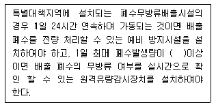
- 100 m3
- 200 m3
- 300 m3
- 400 m3
(정답률: 46%)